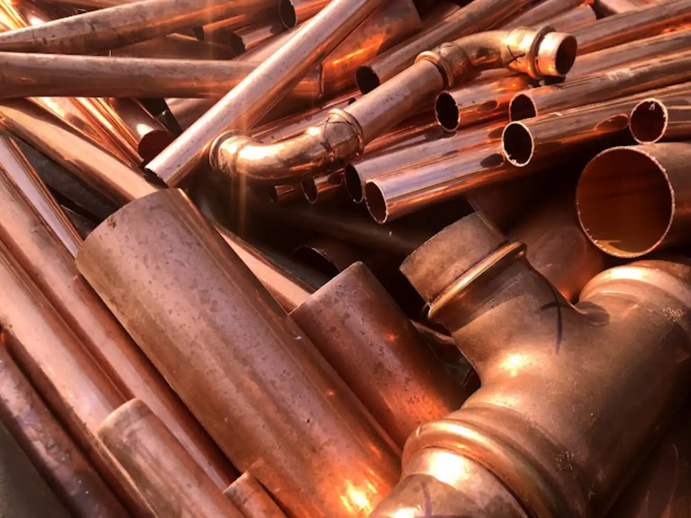
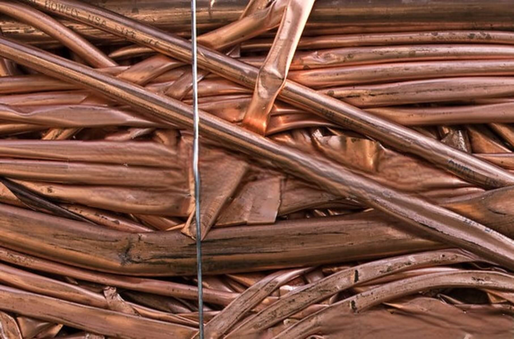
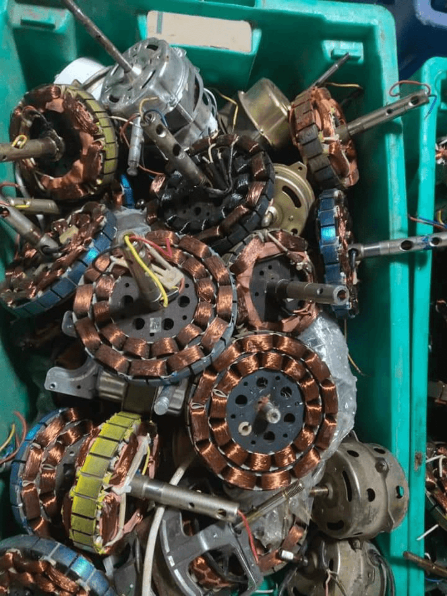

Сдать Медный лом
Характеристики
Медь — относительно мягкий и легко поддающийся переплавке тяжелый металл. Он устойчив к ржавчине и не магнитен.
Медь является отличным проводником электричества и тепла, поэтому играет важную роль в электронных устройствах, а также в строительстве.
Медь прочно вошла в нашу повседневную жизнь:
Спрос на нее растет
Что делает процесс переработки источником дохода для многих.
Используется во многих областях
Этот ценный металл также используется в технических устройствах.
По спросу медь может превзойти только алюминий
Что делает его востребованным металлом.
Где находится медь?
Где находится медь?
Как распознать медь?
Она имеет блестящий красноватый цвет.
На воздухе медь тускнеет и становится красновато-коричневой. Со временем (при окислении)на своей поверхности образуется голубовато-зеленый верхний слой защищающий медь от дальнейшей коррозии. Этот слой называется патиной.
Продать и переработать медь.?
Как и другие металлы, медь легко перерабатывается.
При этом она не теряет качества по сравнению с материалом, полученным из руды. Кроме того, этот процесс переработки можно повторять неоднократно. Медь является наиболее часто перерабатываемым сырьем в мире (коэффициент переработки меди в Украине достигает более 45%).
Следовательно, при переработке меди можно в значительной степени сохранить ресурсы, снизить воздействие на окружающую среду и, таким образом, добиться экономии энергии.
Лучший способ заработать и избавиться от медного лома — это сдать его в пункт приема металлолома. Рекомендуем вам провести тщательное исследование, чтобы найти нормальную базу, предлагающую адекватные условия.
Шаги, которые необходимо предпринять при продаже медного лома — это его оценка.
Прежде чем привезти медь на приемку, лом должен быть разделен по видам. Если вы этого не сделаете, есть вероятность того, что будет занижена стоимость металла, потому что, когда ваш лом загрязнен другими низкосортными металлами, цена на медь значительно падает.
Основные виды медного лома.
Как правило, в качестве металлолома можно выделить две основные категории меди, и мы рассмотрим их в следующих разделах.
Медный лом Твердые вещества
Это первый сорт медного лома, состоящий из чистой нелегированной меди. Кусковой медный лом является наиболее востребованным в промышленности. В этой категории есть три степени:
- Первый класс: он включает в себя отходы штамповки, сегменты коммутатора, медной шины, медные обрезки и провода толщиной более 3 мм.
- Второй класс: материалы этого класса содержат не менее 96 % меди и не содержат паяного или луженого медного лома.
- Третий класс: также называется легкими медными твердыми частицами. Это медные провода менее 3 мм, и их стоимость меньше, чем у первого и второго сортов.
Лом меди нетвердые
В эту категорию входит медная стружка. Конкретного ценового диапазона нет, следует учитывать, что большинство баз не захотят платить за неё много.
Шаги, которые стоит выполнить при сдаче медного лома:
Шаги, которые стоит выполнить при сдаче медного лома:
- Как упоминалось ранее, медный лом подлежит сортировке.
- Первый сорт не содержит примесей, в то время как другие виды имеют некоторые признаки примесей. Сдавая больше медного лома первого сорта, вы получаете больше денег, потому что он самый дорогой.
- Обратите внимание на наличие мусора, который легко удаляется, и избавьтесь от него. Это могут быть железные соединители или концевые фитинги. Устранение этих материалов поможет увеличить стоимость меди. С медных проводов желательно снять изоляцию, однако не стоит надрываться.
После того как вы выполните первые три шага, ваш металл будет готов к продаже. Привозите его к нам на переработку для взвешивания.
Убедитесь, что ни один из материалов не свисает с весов. Менеджер сделает расчет и произведет оплату исходя из веса.
Подготовка меди к сдаче
Ошибки, которых следует избегать при сдаче медного лома.
Небрежное отношение к оценке лома.
Большинство приемных пунктов не рекомендуют вам сортировать лом или снимать изоляцию перед тем, как привезти его. Это потому, что смогут заплатить меньше, если медный кабель не будет зачищен.
Если вы хотите получить реальную цену, мы советуем вам потратить время на сортировку металла. Так вы сможете избежать заниженной стоимости несортированного медного лома.
Продажа на приемку с плохой репутацией.
Вам нужно провести небольшое исследование, чтобы устранить пункты, которые могут воспользоваться вами. Отзывы, рекомендации и завышенные цены — лучшие инструменты для манипулирования. Звоните на базы (без "накрученных" отзывов и завышенных цен).
У нас вы можете сдать свою медь и быстро получить деньги.
Актуальную цену на медь можно узнать
онлайн в любое время на нашем сайте.
Свяжитесь с нами и узнайте
- о текущих ценах
- сколько стоит лом меди в Харькове
- цены на медь и как сдать медь на лом
У нас вы можете сдать свою медь и быстро получить деньги.
Сколько стоит 1 кг меди?
1 кг чистой меди в среднем стоит от 240 до 290 гривен.
Однако фактическая цена зависит от ежедневных событий на бирже металлов, то есть на фондовой бирже.
ВЫВОД, Как и в случае с другими металлами, то же самое относится и к меди: чем чище исходный материал, тем больше он подходит для вторичной переработки. Чем лучше пригодность и больше объем, тем выше цена на медь.
Продажа вашего медного лома может быть не простой задачей, но приведенное выше руководство поможет избежать проблем, которые могут возникнуть.